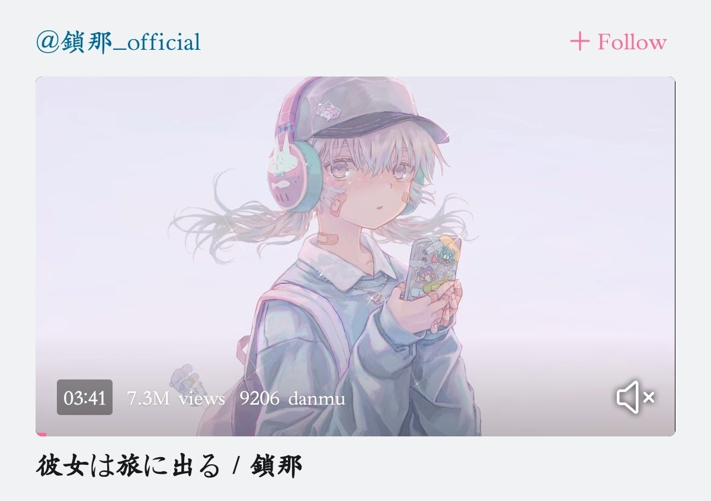

这是那天一起逛商场的时候领的一张传单


这张传单对我来说意义非凡。那天，2020年12月6日，大一。我人生第一次坐火车，一个人去见我最喜欢的老师，教英语的初中班主任。那天是晴天，我和几个同学还有老师一起逛商场的时候领到了这张传单。不知道这家店还活着吗？有机会我想去圣地巡礼。后来我的大学生活，再也没有像那天那样有意义的了 https://t.co/Nvj0X2T4OX
这个视频发出来的时候，和我初次听到这首歌刚好只差了一两个月。
那时候我刚上大一，12月初和几个同学约好了6号去见最喜欢的初中班主任老师。
我提早买了6号的火车票，然后4号那天下午骑着单车从学校去提前看看那个火车站，以免到时候出差错。
而那个下午，我在单车上一直单曲循环这首歌。 https://t.co/RkAGmfvNYN https://t.co/AqwyOF8IW9
那时候我刚上大一，12月初和几个同学约好了6号去见最喜欢的初中班主任老师。
我提早买了6号的火车票，然后4号那天下午骑着单车从学校去提前看看那个火车站，以免到时候出差错。
而那个下午，我在单车上一直单曲循环这首歌。 https://t.co/RkAGmfvNYN https://t.co/AqwyOF8IW9